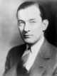

NYC Mayoral Election Simulator
Election of 1929

Jimmy Walker
Party:
Democrat
Bio:
SOON
Vote for Jimmy Walker
Fiorello H. La Guardia
Party:
Republican
Bio:
SOON
Vote for Fiorello H. La Guardia
Norman Thomas
Party:
Socialist
Bio:
SOON
Vote for Norman Thomas